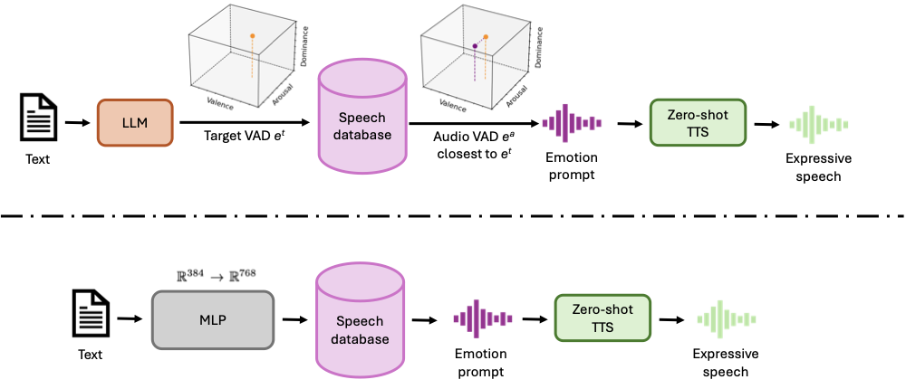

Abstract
Zero-shot text-to-speech (TTS) has recently achieved remarkable naturalness and expressiveness. The latest TTS models such as IndexTTS2 can even accept separate speaker and emotion prompts. Effective emotional control therefore hinges on the appropriate selection of emotion prompts. However, existing research on automated audio prompt selection has mainly focused on contextual relevance, speaker identity or coarse categorical emotions, without employing standardized retrieval paradigms or unsupervised label-free alignment. To fill this gap, we propose two complementary approaches for automatic prompt selection driven by emotion. The first formulates retrieval as continuous affect matching in Valence--Arousal--Dominance (VAD) space, where an LLM predicts target coordinates from text and matches them with pre-indexed audio prompts. The second approach eliminates labels entirely, learning a shared cross-modal representation space directly from paired text--audio data. Listening evaluations indicate that both approaches outperform the neutral baseline, with the VAD-guided method showing the strongest gains in EP-MOS and the label-free method achieving the highest SS-MOS.
Architecture
Figure 1: The architecture of our proposed model.
Audio Samples
| Text | Emotion | VAD | Neutral | 2d | 3d | L0 |
|---|---|---|---|---|---|---|
| I declare this project a complete success! | confidence/joy | (7,6,7) | ||||
| Get out of my face right now! | anger | (1,6,6) | ||||
| Help me! I'm so scared! | fear/helplessness | (1,6,1) | ||||
| I feel so tired and empty. | fatigue/emptiness | (2,1,2) | ||||
| I am going downstairs to buy a bottle of water. | neutral | (4,3,5) |